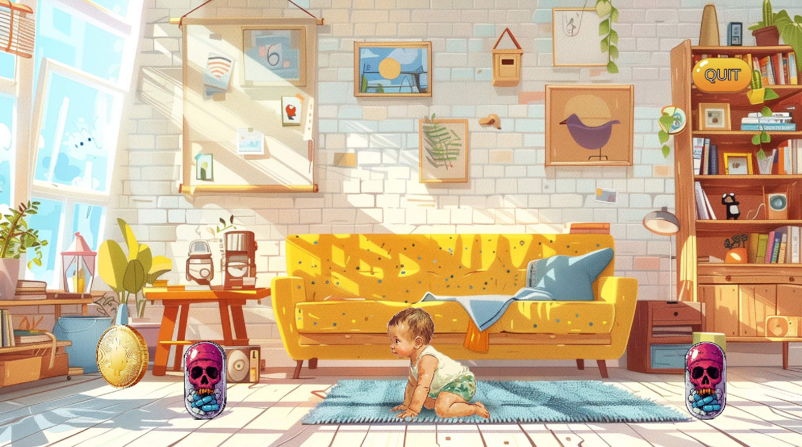

Lucas's Lookout!
About The Game 關於遊戲
Uh oh! Little Lucas is crawling, and the house is his playground! He's fast, curious, and drawn to things that aren't always safe. 噢噢！小Lucas正在學爬，整個家都是他的遊樂場！他速度快、好奇心強，而且容易被不一定安全的有趣事物吸引。
In Lucas's Lookout, you're the caregiver! Your mission: keep him safe from household hazards across different rooms. Can you keep up? 在 Lucas's Lookout 中，您就是照顧者！您的任務是：在他探索不同房間時，保護他遠離家庭危險。您能跟上嗎？
How to Play 遊戲玩法
Collect 5 milk bottles! 在每個關卡中收集 5個奶瓶！
1. Watch & Spot Hazards: 1. 觀察並發現危險：
Lucas crawls automatically. Dangers will appear in his path. Lucas會自動爬行。危險物品會出現在他的路徑上。
2. React Quickly: 2. 快速反應：
- Fixable Hazard? (Outlet, coin, etc.) => TAP the Hazard to remove it. 可移除的危險？（插座、硬幣等）=> 點擊危險物 將其移除。
- Temporary Hazard? (Knife, iron, etc.) => TAP LUCAS to change his direction (brief cooldown after tap!). 暫時性危險？（刀、熨斗等）=> 點擊Lucas 改變他的方向（點擊後有短暫冷卻時間！）。
Game Features 遊戲特色
- 5 Challenging Levels (Living Room, Kitchen, Nursery, Hallway, Bathroom)5 個具挑戰性的關卡（客廳、廚房、嬰兒房、走廊、浴室）
- Handle Fixable & Temporary Hazards應對可移除及暫時性的危險
- Fast-Paced Reflex Gameplay快節奏反應遊戲玩法
- Increasing Difficulty難度逐漸增加
- Reinforces Baby Safety Awareness有趣地加強嬰兒安全意識
- Complete All Levels to Win!完成所有關卡即可獲勝！
(May attempt to switch to landscape on mobile) （在手機上可能會嘗試切換到橫向模式）
Loading game... Please ensure your browser supports WebGL. 遊戲載入中... 請確保您的瀏覽器支援 WebGL。